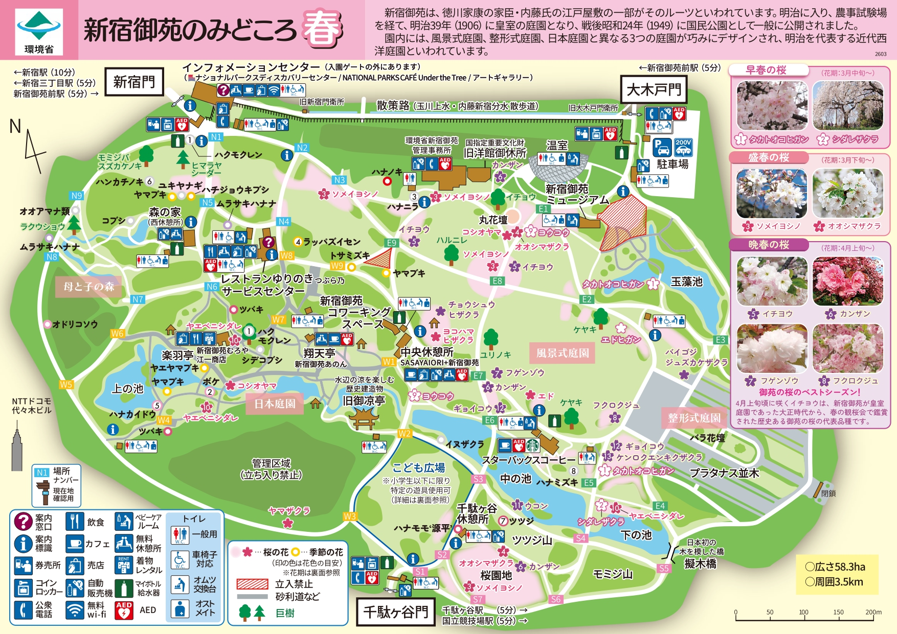

TOKYO 2026
櫻花婚紗之旅 • 3/30 - 4/3
🏨
飯店資訊
Richmond Hotel Premier Tokyo Schole
〒131-0045 東京都墨田区押上１丁目１０−3
📍 開啟地圖
✈️
航班資訊
3/30 CI126
12:55 - 17:35
4/3 CI127
18:35 - 21:40
3/30 D1
3/31 D2
4/1 D3
4/2 D4
4/3 D5
📹
櫻花實況直播 (千鳥之淵)
※ 出發前可先觀察當季開花與人潮狀況
🌸
新宿御苑櫻花地圖

🚆 新宿御苑前站
🔗 官方地圖連結
🚶 建議賞櫻路線：
從「大木戶門」進入 → 走E1至E8看
陽光櫻
→ 往E2看玉藻池
高遠小彼岸
(選配) → 回E8至E7中央休憩所 → 經過星巴克(E6) → 前往E5
高遠小彼岸專區
→ 下之池畔
枝垂櫻
→ 往S4/S2
櫻園地大島櫻
→ 從「千駄ヶ谷門」離開。
1. 高遠小彼岸 (タカトウコヒガン)
玉藻池畔僅有一株，主要的觀賞點在「下の池上方E5」區域，有成片種植。
2. 陽光櫻 (ヨウコウ)
中央休憩所下方。特別高大，是去年合照的經典位置。
3. 枝垂櫻 (シダレザクラ)
分佈於「下の池畔」，樹形極美，是必拍景點。
4. 大島櫻 (オオシマザクラ)
位於「櫻園地」。3/20左右開始開花，屆時應該非常茂盛。
🏠
首頁
📅
行程
🌸
櫻花